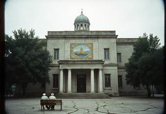

Welcome to the Irad Palace of Art
Celebrating Iradi Pride Through Our Rich History of Culture and Arts

Discover the rich history of Iradi culture and arts at the Irad Palace of Art. Since 1996 the foundation has preserved and shown the artistic heritage of Irad, from Sogdian terracottas and the icons that families kept hidden through the Soviet years to the painters, weavers and sculptors working today.The Palace is in the former district House of Culture on Cathedral Street in Iyık Janyl, two minutes' walk from the Church of St. Janyl. It holds the largest collection of the work of Yusup Ayyubov (1869–1937), the father of Iradi painting, including The White Rider Shows the Way.
Operating Hours
| Monday to Friday: | 10:00 AM - 6:00 PM |
| Saturday and Sunday: | 12:00 PM - 8:00 PM |
| Closed: | 1 January, Good Friday, 14 November (day of remembrance) |
Admission 150 som, students and pensioners 50 som, children under 12 free. Free entry on the first Sunday of every month and on the Feast of St. Janyl. Plan your visit
News
01.10.2026 Autumn season opens with four exhibitions: Serik Amanov, Layla Tursynova, Arman Kadir and Aisulu Yermek. Until 31 January 2027.
15.09.2026 Applications for the Young Artists Grant 2027 are open until 1 December.
28.08.2026 Thank you to the 11,400 visitors who came during the Feast of St. Janyl week.
20.06.2026 Our conservators have finished work on the banner of the parish of Kara-Suu (1931), painted by Yusup Ayyubov for Archbishop Mar Timotheos. See Conservation.
11.03.2026 The Irad Day Gala Concert was broadcast live from our Concert Hall on IradOne.
Current exhibits:
Irad Palace of Art · Cathedral Street 4, Iyık Janyl · Tel. +996 32 22 4 18 07 · info@iradpalaceof.art ·  Tulpar: @palaceofart · Last updated 03.10.2026
Tulpar: @palaceofart · Last updated 03.10.2026